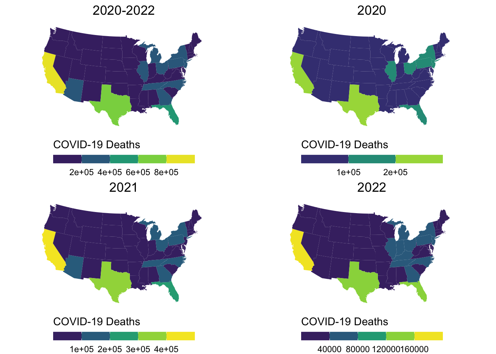
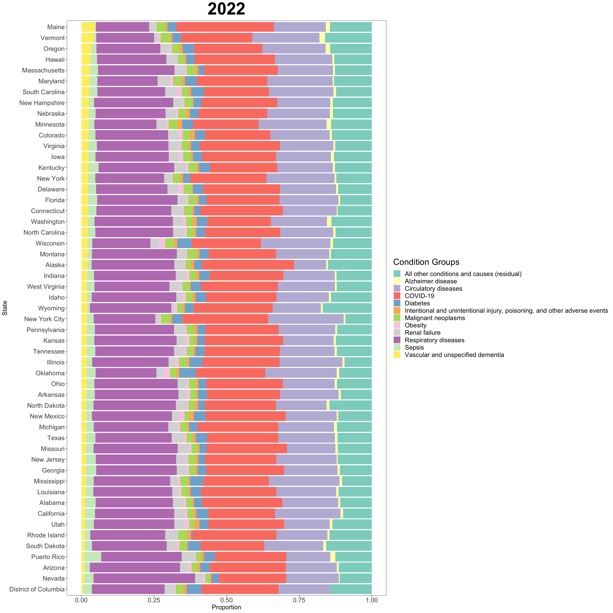
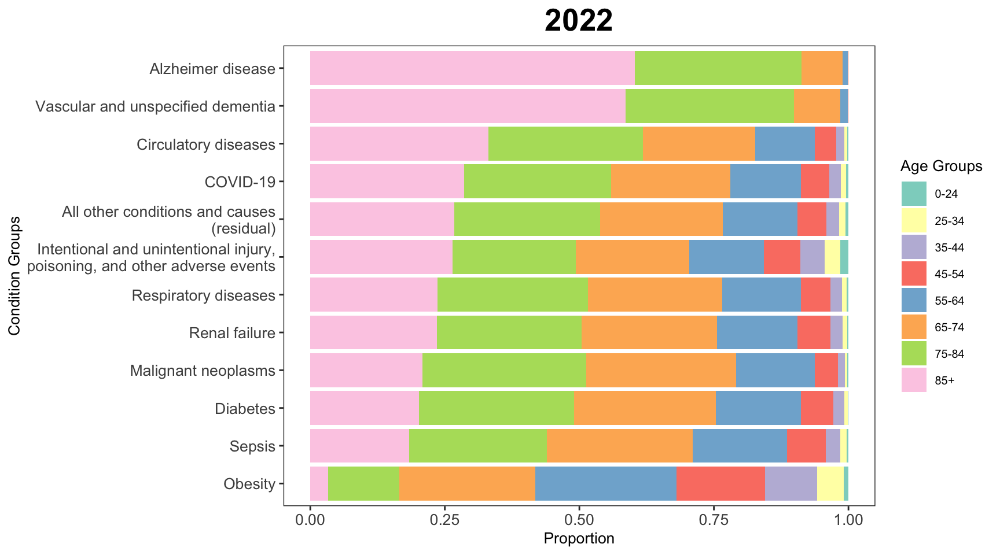
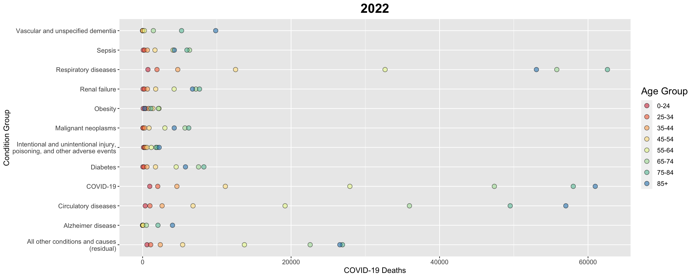
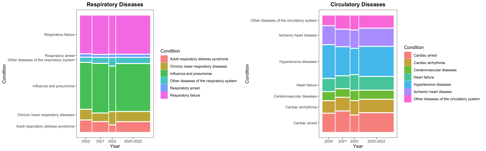
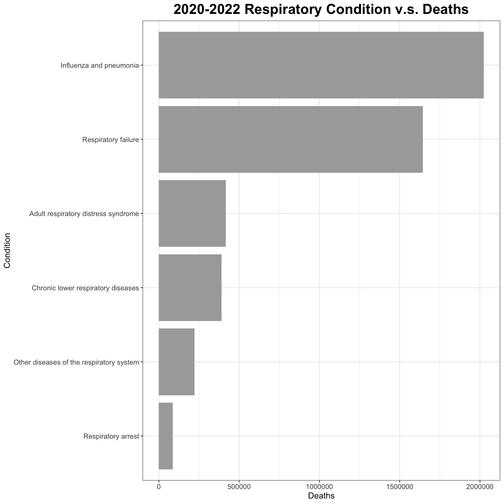
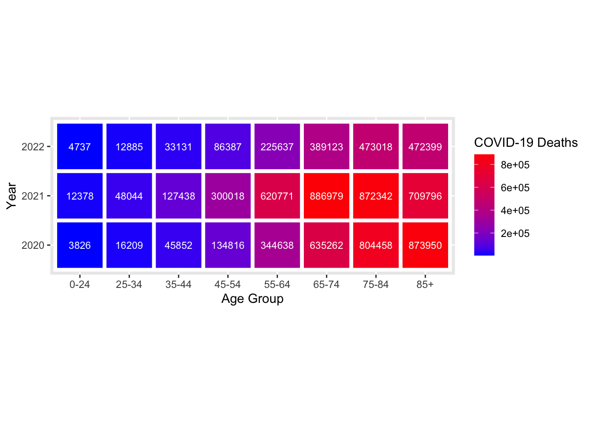
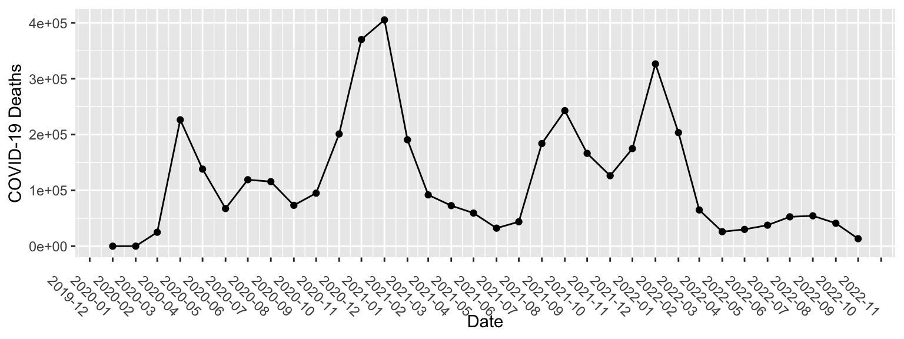
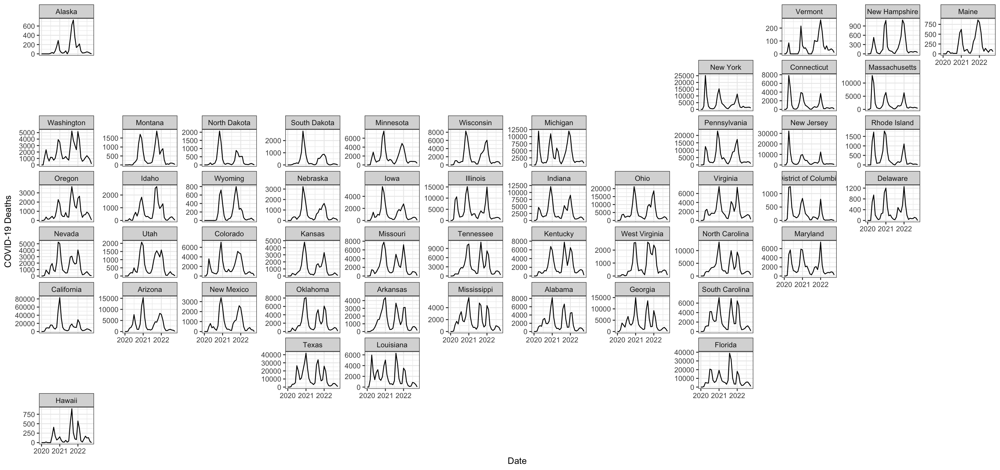

Chapter 4 Results
4.1 Graph 1

From Graph 1, We make chloropleth maps to report and compare the COVID-19 deaths in United States from 2020 to 2022.
Overall in the three years period, California has the most number of deaths with about 900,000 deaths reported, followed by Texas’s about 700,000 deaths and Florida’s about 500,000 deaths. Other parts that stands out are the northeastern states, some southeastern states and Arizona. Other states each has an average of 100,000 deaths reported.
In 2021 and 2022, the states have the similar death distribution as the total deaths in the 3 years period. In 2020, Texas stands out together with California in the number of deaths reported in state. The total deaths reported in United States in 2020 is relatively the lowest comparing to the other years, and the total deaths reported in United States in 2021 is relatively the largest comparing to other years observing from the graph. Besides, from 2020 to 2022, the number of deaths in the Eastern US increases compared with other places since there is a increasing number of states in the eastern US jump out of the lowest bar.
4.2 Graph 2
4.2.4 2022

In 2020-2022, from the deaths reported, people in United States with COVID-19 only, respiratory diseases, and circulatory diseases take a large proportion. The group with all other conditions and causes(residual) take up a noticeable proportion as well in the population. Other conditions like intentional and unintentional injury, vascular and unspecified dementia, and obesity take a very small proportion of deaths. To conclude the findings by analyzing the conditional groups, we can say that we need to pay more attention to people with circulatory and respiratory diseases because they are more likely to die due to COVID-19 virus.
4.3 Graph 3
4.3.4 2022

From analyzing the age groups and conditions of the deaths in United States from 2020-2022, for those deaths reported with underlying diseases, people with ages 45+ take up about more than 90%. In the condition of Alzheimer disease and vascular and unspecified dementia, people with ages 85+ take up more than 50% of the deaths in these condition groups. The next dangerous age group is ages 75-84, also takes about 25% of the proportion deaths. For the other conditions except obesity, age groups of 55-64, 65-74, 75-84, and 85+ each take up about 20% in each of those conditions. In the obesity group, age groups of 25-34, 45-44, 45-54 have noticeable increases in the proportion deaths comparing to other condition groups, and people with ages 85+ this time takes up only about less than 5% of the proportion deaths.
To conclude, people that are older than 55 with some underlying diseases are easier to experience severe symptoms and easier to die from COVID-19.
4.4 Graph 4
4.4.4 2022

The graphs of condition groups by COVID-19 deaths in 2020-2022 also clearly support our previous conclusion that people with respiratory diseases, circulatory diseases and COVID-19 only takes up a large proportion of COVID-19 deaths in United States in that period, and the older the age, the higher chance of you dying from COVID-19 deaths. We can observe that the blue and dark green points are far from the others representing high number of deaths, and the distribution for COVID-19, respiratory diseases and circulatory diseases are far more spread out than other conditions with the older age groups each having more than 200,000 deaths comparing with other conditions with points more concentrated below 100,000 deaths. Besides, we can see that in the year of 2021, the proportion of deaths among elderly people (older than 65) with COVID-19 and circulatory diseases decreases a lot compared with other time periods.
4.5 Graph 5

In graph 5 we further explores the two condition groups - respiratory diseases and circulatory diseases by their sub-conditions respectively through mosaic plots. The two mosaic plots gives the proportion of COVID-19 deaths that each sub-condition accounts for from 2020 to 2022. For respiratory diseases, the distribution of sub-conditions doesn’t vary much over time, and the proportion taken by each condition remains relatively steady. Influenza and adult respiratory distress syndromes are the two major conditions that lead to the most of COVID-19 deaths caused by respiratory diseases. On the other hand, the proportion distribution of sub-conditions for circulatory diseases is more even. Hypertensive diseases account for the largest fraction but it is not significantly greater than other conditions. Similarly, the distribution remains relatively steady over time.
4.7 Graph 7

Graph 6 & 7 are here to illustrate the mosaic plots in graph 5 more quantatitively. During the severe COVID-19 period 2020-2022, the highest proportion deaths of United States’ citizen is conditioned by respiratory diseases of close to 500,000 deaths. In the respiratory disease group category, 200,000 deaths are people with also Influenza and pneumonia, and 170,000 are people with respiratory failures.
4.8 Graph 8

Graph 8 aims to explore the number of deaths in different age groups from 2020 to 2022. The sequential color depth encoding in a heatmap is very intuitive for visualizing this difference. In terms of age groups, it is very obvious that elder age groups are more vulnerable to COVID-19 in terms of the number of fatal cases, and the difference can be huge. For example, the number of fatal case for the age group 65-74 is more than hundred times the fatal cases of age group 0-24 in all times. This result indicates that age is a very important factor in determining the fatality of COVID-19, and more medical resources should be focused on the elder age groups. In terms of time period, the situation in 2021 was worse than 2020, and then got better in 2022. This could be the result of implementing effective prevention methods like vaccines and virus mutations.
4.9 Graph 9

Graph 9 is a time series plot of COVID-19 deaths. It demonstrates the pandemic’s progression from 2020 to 2022. The first peak came in 2020-05, which was only two months after start of the pandemic, indicating that COVID-19 is highly infectious and capable of exponential growth. The second peak occured on 2021-02, which was nearly twice as much as the first peak. but soon start to decrease sharply. In 2022-02, there was a third and last peak, which might indicate the occurrance of a variation of the virus.
4.10 Graph 10

Graph 10 explores the relationship between the number of COVID-19 deaths and locations. The time series plots of COVID-19 fatal cases for each U.S. state is plotted on their respective location on the U.S. map, giving an intuitive demonstration of how the progression of COVID-19 differs between different states. California, Texas and Florida are the states with the most COVID-19 death cases. Those three states have a large population base, so people live more closely to each other and thus make the implementation of social distancing and other effective prevention methods harder. On the other hand, most states have a similar trend of COVID-19 death cases over time, which also corresponds to the trend we discovered from the previous national-wide time series plot. Besides, states that went through a peak in the early stage of COVID-19 burst (around March 2020) are mainly in the east coast.